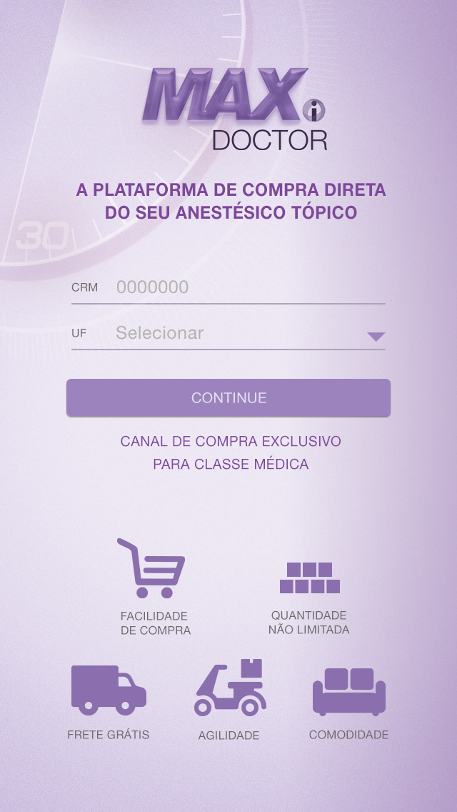

Layout responsivo de um formulário para "MAX Doctor", uma plataforma de compra de anestésicos.
Este projeto foi criado com o único propósito de ser o meu teste de seleção e não tem intenção nenhuma de ir para produção.
O projeto não precisa ser instalado, você pode abrir o index.html no navegador e visualizar.
O layout foi baseado nesta imagem de referência
